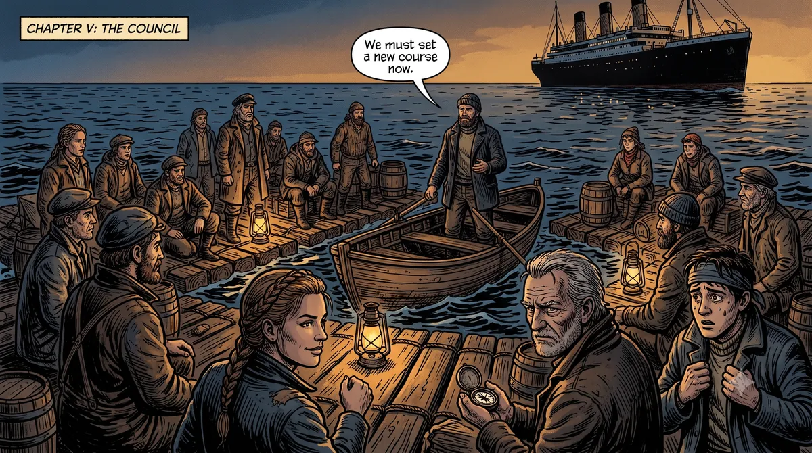
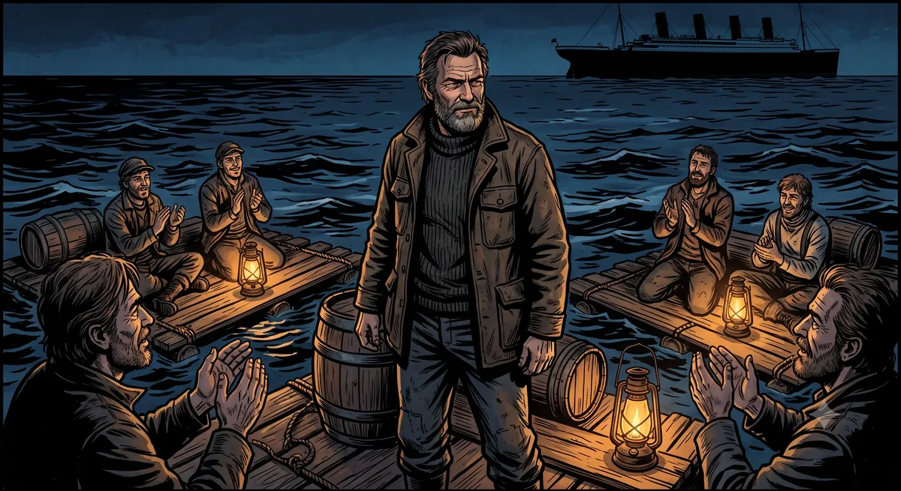
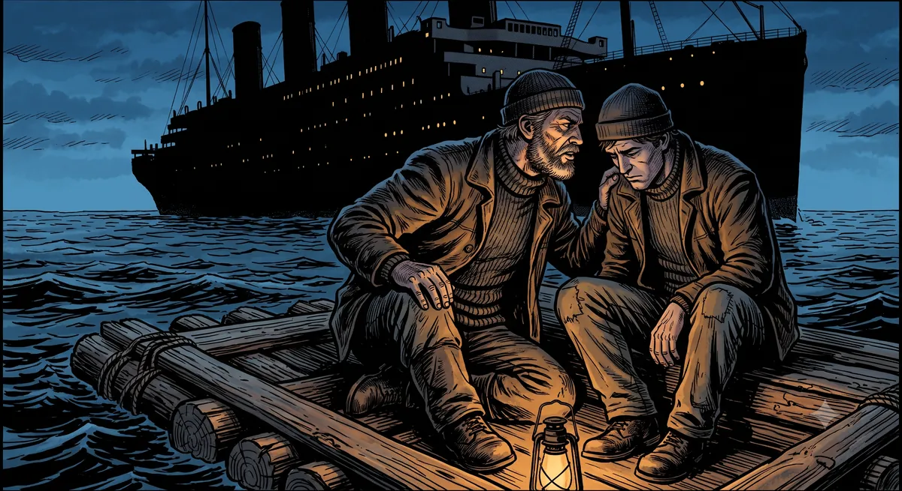
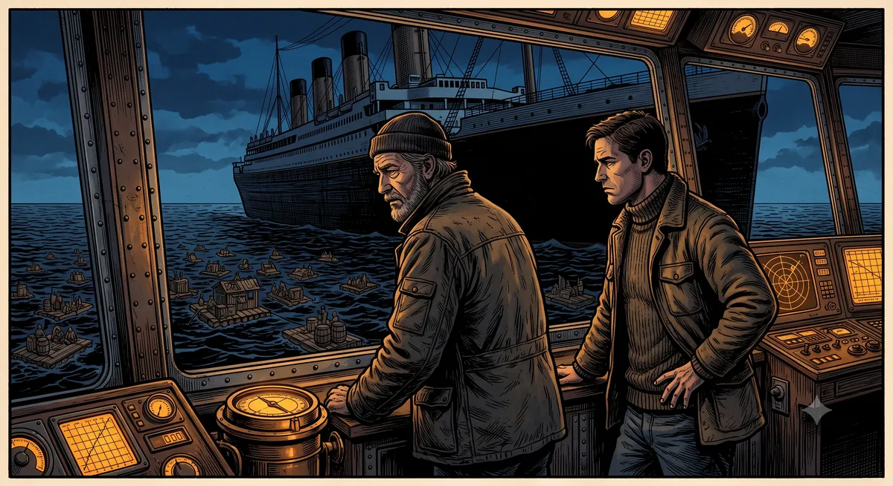

EL BALSERO Y EL TRASATLÁNTICO — Parte 4: El que remaba con orgullo
El balsero, llamado Yusuf, llevaba meses en el puente.
Había aprendido a leer el mar desde arriba con la misma naturalidad con que antes lo leía desde abajo. Conocía la diferencia entre los que no habían subido porque no querían, los que no habían subido porque no sabían cómo, y los que creían que ya estaban a bordo cuando seguían remando.
Ese último grupo era el más numeroso.
Y esa mañana decidió bajar.
Pidió que bajaran un bote. Descendió despacio, se alejó del trasatlántico, y se metió entre las balsas.
El mar estaba lleno de ellas, como siempre. Hombres y mujeres remando con destreza, con años de oficio encima, con la seguridad tranquila de quien conoce bien su herramienta.

Se acercó a un grupo y les hizo una pregunta sencilla.
—¿Cuánto saben de ese barco?
Las respuestas llegaron rápido. Uno dijo que lo usaba todos los días. Otro que llevaba meses experimentando. Uno se puso un diez. Otro un ocho. Hubo quien, con honestidad, se puso un dos.
Yusuf los escuchó a todos.
Luego señaló el trasatlántico y les hizo una segunda pregunta.
—¿Alguno ha estado en el puente de mando?
Silencio.
—¿Alguno sabe cómo funcionan sus instrumentos de navegación?
Más silencio.
—¿Alguno sabe siquiera cuántas cubiertas tiene?
Nadie respondió.

Y ahí estaba el tamaño real de la distancia. El que se había puesto diez y el que se había puesto dos estaban exactamente en el mismo lugar — calificando su balsa, convencidos de que eso decía algo sobre el barco. Notas altas, notas bajas. Pero ninguno había subido. Y su nota, alta o baja, medía lo mismo.
Fue entonces cuando uno del grupo hizo algo que dejó a todos callados.
Anunció que al día siguiente vendría una marejada fuerte. Dio la hora, la dirección, la intensidad. Lo dijo con la calma de quien lleva décadas leyendo el mar.
Al día siguiente, la marejada llegó exactamente como él la había descrito.
El grupo lo admiró. Dijeron que era el mejor balsero que habían conocido. Que tenía un instinto que no se aprende en ningún lado.

Yusuf lo miró desde cerca. Sabía lo que había pasado. La noche anterior ese hombre había subido al trasatlántico en silencio, había usado sus instrumentos de navegación, había leído los datos con una precisión que ninguna balsa podría darle jamás. Y luego había bajado, guardado el secreto, y presentado la predicción como si fuera suya — como si fuera el resultado de sus años remando.
Le había robado el mérito al barco para dárselo a su balsa.
Yusuf se acercó y le dijo en voz baja, sin que los demás escucharan:
—Usaste los instrumentos más precisos que existen para predecir esa marejada. Y luego los escondiste para que todos creyeran que fue tu instinto.
El hombre no respondió.
—Estás orgulloso de la balsa —continuó Yusuf— y avergonzado del barco. Eso es exactamente al revés.

Subió de vuelta al trasatlántico.
Claude lo esperaba en el puente.
—¿Y bien? —preguntó.
Yusuf miró el mar lleno de balsas antes de responder.
—Todos se están poniendo nota. Unos se sobran, otros se encogen. Pero al final los dos están calificando su balsa, no el barco.
Claude no dijo nada.
—Y el que usó el barco de verdad —siguió Yusuf— lo escondió. Porque le da vergüenza algo que debería darle orgullo.
—Eso tiene nombre —dijo Claude.
—¿Cuál?
—Todavía no lo han inventado. Pero cuando lo inventen, va a describir exactamente esto: el síndrome del balsero que llegó al trasatlántico y bajó de vuelta remando para que nadie se diera cuenta.

Moraleja:
El que se pone diez y el que se pone dos están midiendo lo mismo — su balsa. Y la balsa no dice nada sobre el barco.
El problema nunca fue que se note que usas el trasatlántico. El problema es usarlo en silencio y esconderlo como si fuera una vergüenza.
El que mañana mande no va a ser el que reme con más orgullo. Va a ser el que maneje el trasatlántico sin pena y sin pedir permiso.
Continuará.